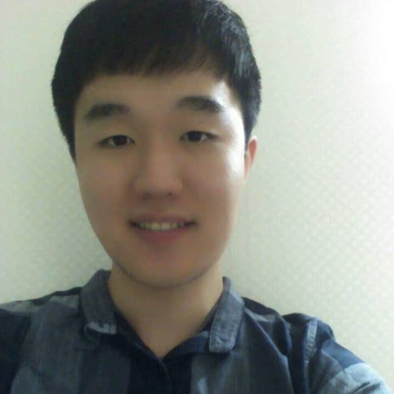

Hongjun Jang
hongjun-7@daum.net
Undergraduate Student
College of Informatics, Dept of Computer Science and Engineering
Korea University
 Tistory Blog
Tistory Blog
 GitHub
GitHub
 Facebook
Facebook
Education
- 2013 Mar. ~ : Korea Univeristy, Seoul, South Korea (B.S. Computer Science)
- Current Cumulative GPA : 3.99/4.50 (Overall), 4.14/4.50 (Major Only)
- 2010 Mar. - 2013 Feb. : Daegu Science High School, Daegu, South Korea
Interests
- Academic Interests
- Combinatorial Optimization
- Algorithm Design & Analysis
- Graph Theory
- Software Engineering
- Extra-curricular Interests
- Competitive Programming & Problem Solving(ACM-ICPC, Topcoder, Codeforces, etc.)
Teaching
- Samsung Code Mentoring Instructor, 2015 - 2017.
- International Olympiad in Informatics (IOI) Student Assistant Coach of the Korea team, 2016
- International Olympiad in Informatics (IOI) Training Camp in Korea, Coach and Problem Setter, 2013 - 2016
-
Korea Olympiad in Informatics (KOI), Coach and Problem Setter, 2013 - 2015
Awards and Honors
- Korea Olympiad in Informatics(KOI), Silver Medal, 2009
- Korea University Software Olympiad, 1st place(KU President's Award), 2013
- Samsung Collegiate Programming Cup, 4th place, 2016
-
ACM International Collegiate Programming Contest(ACM-ICPC)
- Daejeon Regional 2013, 10th place(NHN Special Award)
- Daejeon Regional 2016, 4th place(Minister of Science, ICT and Future Planning Award)
- Samsung Scholorship for Prominent Graduation from Daegu Science High School, 2013
- Korea University Scholarship for Gifted Students in Science, 2013
- Samsung Scholorship for Samsung Software Track, 2016 - 2017
Work Experience
- AniPark, Server Programmer, 2014
- Samsung Electronics Software R&D Center, Software Engineer, 2016
- Artificial Intelligent Team
- Project : Analysis and Optimization of the state-of-the-art Object Recognition Platforms(Fast R-CNN, YOLO)
Skills
- C, C++, Python, Java
Presentation
- 2017.2.11, "Teamwork in Programming Contests", Samsung Electronics Software R&D Center, Korea [Slides]